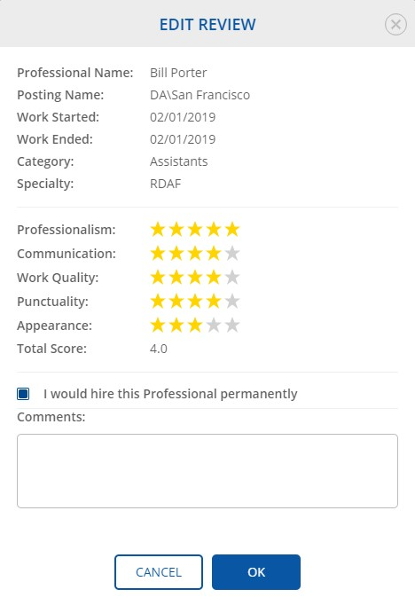

A user is able to see the published earlier reviews.
If not yet added, you must first add at least one role.
-
Observe that See Reviews dialog appears.

-
Observe the required review.

If a doctor wants to see the total rating of a professional, it is possible to observe at Total Rating column at the Past Hiring History view.